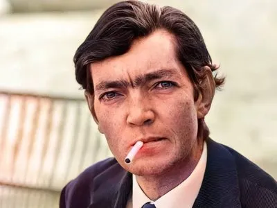
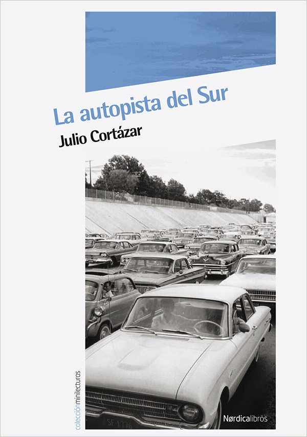

Un poquito de contexto...
Como tema nos toco "La autopista del Sur" un cuento de Julio Florencio Cortázar . Fue un escritor y profesor argentino. También trabajó como traductor, oficio que desempeñó para la Unesco y varias editoriales. En 1981, sin renunciar a su nacionalidad argentina, optó por la francesa en protesta contra la dictadura militar en su país,que prohibió sus libros y que él denunció a la prensa internacional desde su residencia en París.

Se lo considera uno de los autores más innovadores y originales de su tiempo, maestro del relato corto, la prosa poética y la narración breve en general, y creador de importantes novelas, sobre todo Rayuela, que inauguraron una nueva forma de hacer literatura en el mundo hispano.
Sus gustos eran muy amplios, sentía atracción por los libros de vampiros y fantasmas, lo que debido a su alergia al ajo, era motivo de bromas. Cortázar afirmó haber leído más novelas francesas y anglosajonas que españolas, lo que compensaba leyendo mucha poesía española, incluyendo a Salinas y Cernuda, a quienes dedicó comentarios entusiastas.
Hablando del cuento...
El cuento “La autopista del sur” publicado en el libro “Todos los fuegos el fuego” (1966)
relata sobre un embotellamiento en una carretera relativamente cercana en París. El
tráfico empieza a tardarse más de lo habitual, y las personas comienzan a conocerse y
crear grupos sociales para sobrellevar la
situación.
Durante esos días que dura el
embotellamiento, sucede todo tipo de
eventos; como es la decisión de un
representante del grupo, búsqueda
y reparticiones de agua y comida, la
creación de una “ambulancia”, huidas
del embotellamiento, problemas
amorosos, etc. Hasta que nuestro
protagonista, el ingeniero; empieza a
notar que falta poco para llegar a la
ciudad, y que los autos comienzan a
avanzar cada vez más rápido, al punto
de que el embotellamiento comienza
a disolverse, y todo se vuelve a la
normalidad. Las personas que convivieron
en el grupo se vuelven completamente
desconocidos al retomar el rumbo de
sus vidas.
